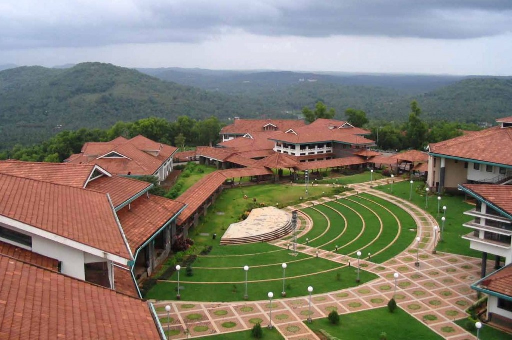
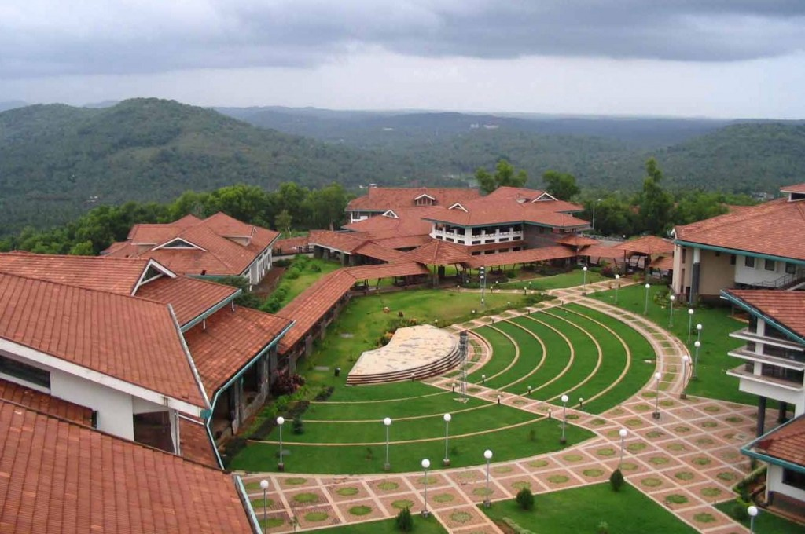
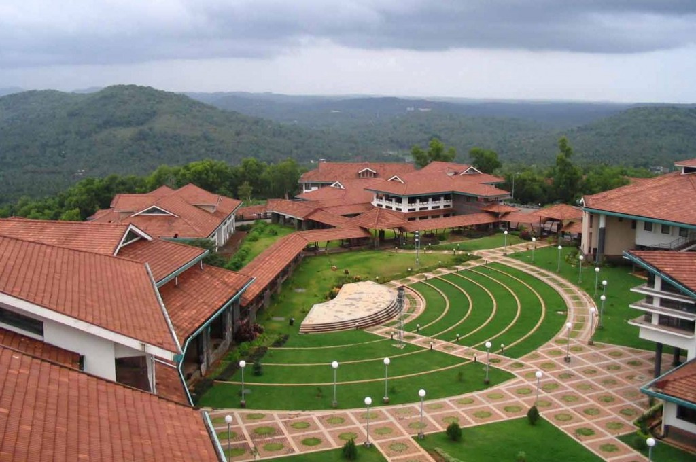
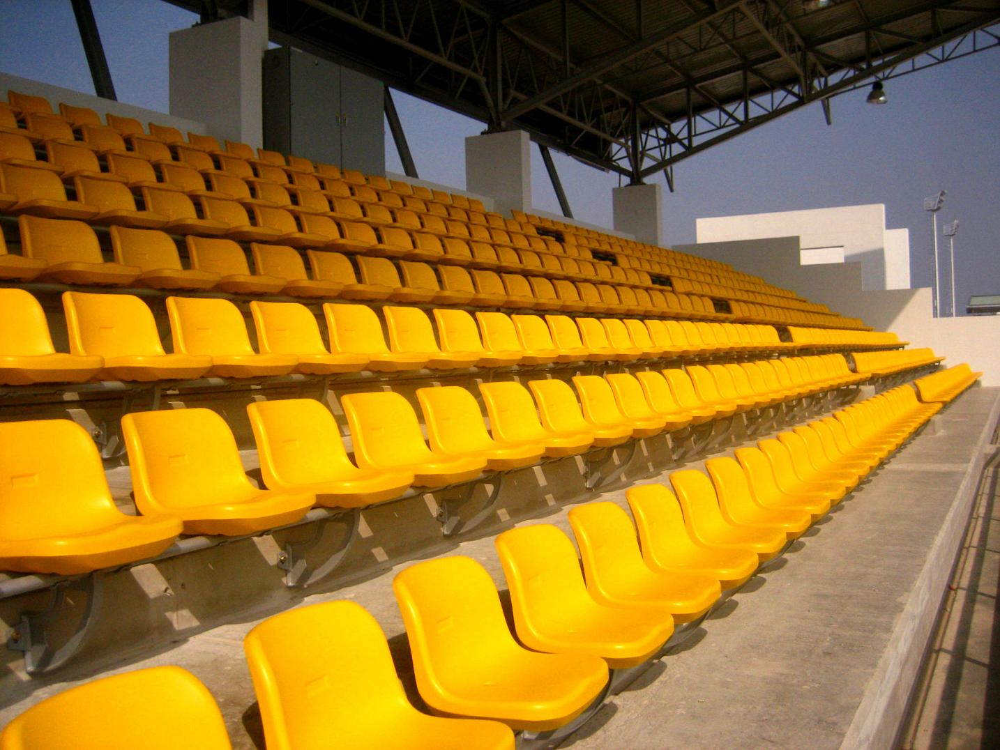
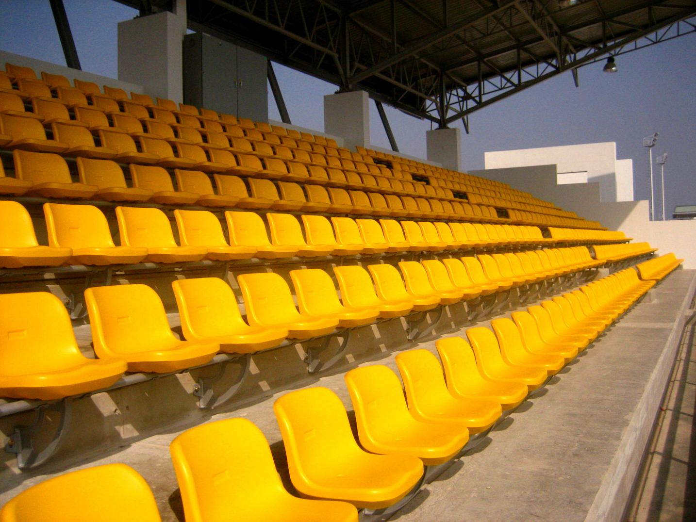

Beautiful Campus
 

Telangana State University is one of the institutes of national importance. TSU was established in 1981 with the aim of giving best education to the students in the field of engineering.
TSU has 1020 professors and 12966 students.

 


Copyright © Telangana State University Kamareddy. All Rights Reserved.
Made with by Aditya